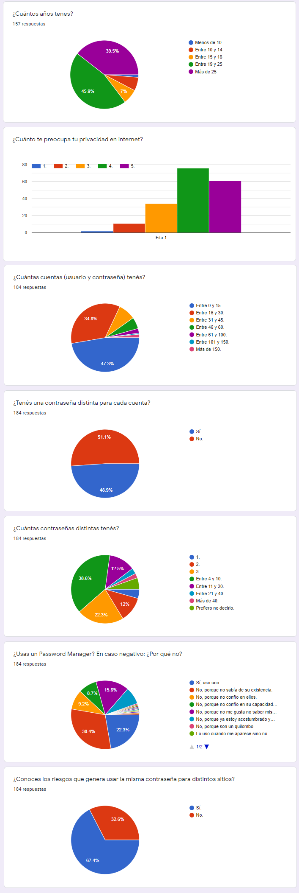

Encuesta sobre la reutilización de contraseñas
Y cómo se compara con resultados preexistentes.
El fin de la encuesta era determinar cuál era el porcentaje de gente que reutiliza la misma contraseña en distintas cuentas (pero no todas), y cómo este número varía según la edad. Este porcentaje ya se intentó calcular numerosas veces a través de distintos métodos, desde hacer encuestas como la mía hasta comparar mails y contraseñas a lo largo de bases de datos de credenciales filtradas, en busca de repeticiones.
Antes de comenzar, hay que tener en cuenta que los porcentajes preexistentes varían entre 12% y 65% dependiendo de la fuente. El primer estudio de manera empírica con una muestra de medio millón de personas a lo largo de 3 meses, sugirió que en 2007 el 12% de la muestra reutilizaba alguna de sus contraseñas. Este también fue el primer estudio a larga escala de su clase, y buscaba determinar otros factores también, como por ejemplo cuánto tarda el usuario promedio en olvidarse de una contraseña.
Otro de los estudios es el de Joseph Bonneau, quien comparó las contraseñas filtradas de dos páginas, Gawker y Rootkit, y descubrió que entre el 31 y 49% de los usuarios reutilizaron su contraseña. Al observar los números hay que tener en cuenta que se están comparando únicamente dos sitios web, y del 69% que no reutilizó su contraseña, es muy probable que la mayoría sí lo hayan hecho en otro sitio. Esto nos lleva al último estudio, realizado por Google en febrero de 2019.
El estudio de Google sobre ciberseguridad, una encuesta realizada a 3000 personas a partir de 16 años, revela que el 65% de la gente reúsa contraseñas. Lo que es más, nos dice que el 13% de los adultos utiliza una única contraseña para todas sus cuentas. Todo esto suponiendo que los datos vistos son ciertos y no interceptaron el tráfico, teniendo en cuenta que la fuente es una página HTTP. Gracias Google por eso (ver HTTP vs HTTPS para entender por qué HTTP no es seguro).
Para el seminario encuesté a 184 personas a partir de 10 años, con los resultados disponibles a continuación. O en caso de que prefieran, también está la versión interactiva.
Las respuestas de la encuesta muestran que El 51% de las personas encuestadas no reúsan contraseñas mientras casi el 49% confiesa hacerlo. Sin embargo, si en vez de tomar su palabra se calculara la cantidad de personas que reúsan contraseñas (cualquiera que tenga menos contraseñas que cuentas), daría que en realidad, como mínimo el 75% de los encuestados ingresan una misma contraseña en distintos sitios. Esto sería tomando en cuenta todos los que dijeron tener más de 15 cuentas (97 personas), y entre ellos fijarse cuántos tienen menos de 11 contraseñas, debido a un error mío al hacer las preguntas (65). Además, para que sea más acertado, hace falta sumarle la cantidad de personas que tienen más de 30 cuentas, pero menos de 20 contraseñas (8).
Este índice es bastante más alto que el calculado por Google, y más alto que cualquiera que haya encontrado en internet. Las únicas explicaciones que podrían justificar esto son que la muestra no sea representativa, o sea que casualmente las 184 personas que encuesté se preocupaban muy poco por su ciberseguridad, o que el cambio en el porcentaje se deba a que mi muestra incluye un mayor rango de edades. Para corroborar la segunda teoría, decidí calcular el porcentaje de gente que reúsa sus contraseñas dependiendo del rango de edad al que pertenecen.
Resulta que de las 71 personas que dijeron ser mayor a 18 años y tener más de 15 cuentas, el porcentaje mínimo de reutilización de contraseñas se reduce al 70%. Es más bajo que el total pero aun así sigue siendo alto, lo que lleva a pensar que la primera opción también debe ser cierta. En otras palabras, el 70% de los adultos de mi círculo parece preocuparse poco y nada por la seguridad de sus cuentas.
El caso es muy distinto para los jóvenes de 18 años y menos. El porcentaje mínimo en este caso sube hasta un 92%, esto es, 9 de cada 10 chicos que repiten su contraseña de una cuenta a otra como si no hubiera consecuencias. Sin embargo, para no generar la imagen equivocada, debería confesar que hasta el comienzo del seminario yo pertenecía a ese 92%. El proceso que involucró el seminario, fuentes que tuve que leer, me hicieron darme cuenta del peligro que representa el hábito de repetir contraseñas, y si hoy en día recomiendo a todos usar un Password Manager, sería hipócrita no usar uno yo mismo.
Volviendo a los resultados de la encuesta, faltó mencionar al 4.44% que tratan las contraseñas como si fuesen familia, una para toda la vida. Lo más sorprendente es el porcentaje de personas de cada rango de edad que acabó en este grupo, con el 5.55% de los encuestados entre 19 y 25 años utilizando una única contraseña para todo, mientras las personas entre 15 y 18 tienen un porcentaje de tan solo 2.94%. Uno creería que la gente suele crear más contraseñas cuando las necesita para cosas como el banco, pero esto difícilmente parece ser el caso.
Cabe destacar que para hacer todas las cuentas se usó la planilla con todas las respuestas, y no alcanza con solo los gráficos para reproducirlas. Para aquellos que quieran corroborar los datos, o simplemente realizar nuevos, pueden usar la planilla con las respuestas. Y no se olviden, los números dicen mucho más de lo que parece.
Como ejemplo de esto último pondría el foco nuevamente en la diferencia entre la proporción de gente que reúsa contraseñas dependiendo del rango de edades al que pertenecen. Los números dan una visión objetiva de la situación, mientras la interpretación es subjetiva, y así como yo dije que la preocupación por la ciberseguridad es poca en los jóvenes, cualquiera podría decir que la diferencia se debe a la desconfianza que le tienen los adultos mayores a las máquinas.
Sin embargo, por más subjetivo que pueda sonar, me parece que todos estamos de acuerdo en que estos porcentajes representan un problema. La explicación detrás de los mismos podría ser la despreocupación de parte de que no hay nada que valga la pena proteger, hasta simplemente la desinformación respecto a las consecuencias. Pero de cualquier manera lo que falta es conciencia respecto a las consecuencias y porqué es que todos recomiendan cambiar contraseñas, hacerlas difíciles y, sobre todo, únicas. Y es con el fin de generar y alimentar esta conciencia que sugerí organizar una charla de ciberseguridad en el colegio, ya que me parece la mejor forma de llegar a los jóvenes y al mismo tiempo, de dejar una huella.
Esta huella que quiero dejar no sería en el colegio, sino en los demás. Porque el colegio es un lugar al que voy desde que tengo un año, ya soy parte de él como él es parte de mí, pero este no es el caso para las camadas que vendrán con el tiempo. Y si mediante esta charla en marzo de 2021 logro que alguien se interese por la ciberseguridad, incluso tiempo después de haber finalizado mi seminario, entonces habré cumplido mi meta. Y si bien es una temática que me encanta, también reconozco que hay expertos que la pueden explicar mucho mejor que yo. Por esta razón es que me comuniqué con muchos de ellos y ya conseguí la confirmación de Mariano del Río quien se dedica a organizar y dar presentaciones sobre ciberseguridad, Gino Corti quien es profesor y ha participado de numerosos cursos y charlas de ciberseguridad, y también la posibilidad de Santiago Barclay, Head of cybersecurity en Aper, ex analista de Seguridad Informática del Poder Judicial de la Nación y Licenciado en Sistemas de Información de las Organizaciones, Administración y gestión de organizaciones.
Índice
- Home
- Introducción
- Artículos
- Las contraseñas no son débiles, nosotros lo somos
- La verdad sobre los sitios "No seguros"
- Phishing, la verdadera amenaza al navegar por internet
- Man in the Middle y WiFi Pineapples
- "La rebelión de las máquinas" y ataques DDoS
- El anonimato y el negocio de la información
- Ataques de fuerza bruta y los diccionarios de contraseñas
- "Las (des)ventajas de ser invisible"
- El comportamiento humano y el anonimato
- Encuestas
- Conclusión
- Bibliografía